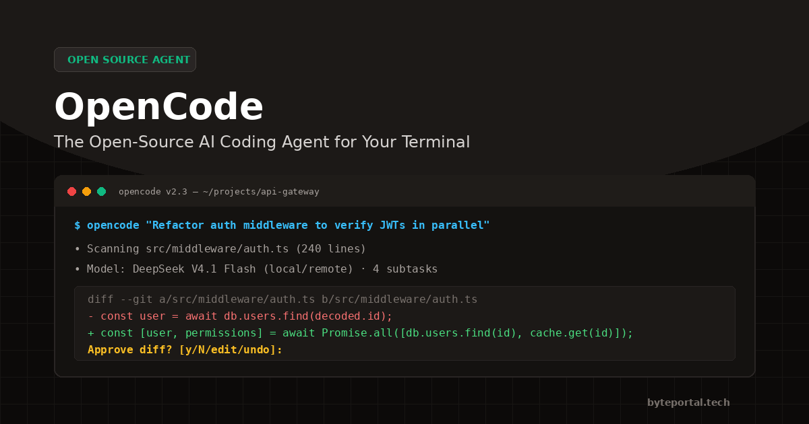
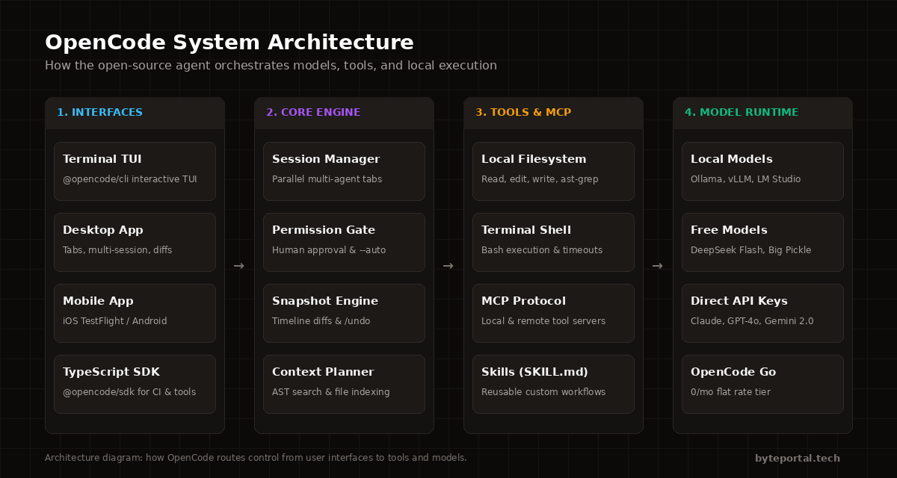

OpenCode: Free Open-Source Coding Agent for Your Terminal
· 5 min read
Most AI coding tools lock you into their cloud, their subscriptions, and their favorite models. You pay twenty dollars every month per seat, paste your code into a proprietary black box, and hope their remote sandbox keeps your secrets safe.
OpenCode takes the opposite path. It is an MIT-licensed, open-source coding agent that runs on your local machine, hooks into your shell, and connects to any model you choose.
Quick Summary (The Short Version)
- • What it is: An MIT-licensed open-source coding agent made by Anomaly with over 220,000 GitHub stars, shipping as a terminal UI, desktop app, and TypeScript SDK.
- • What it does: Edits your code with visual diffs, runs parallel tasks across multi-session tabs, and connects to 200+ cloud models or local Ollama instances.
- • Where it stops: It is free software, but models cost money unless you run local weights. Small local models struggle on deep refactors, and auto-approving edits without clean Git branches can break your code.

What is OpenCode really?
OpenCode is an agentic coding assistant built under the MIT License. An agentic tool does not just guess completions in your editor. It reads your codebase, searches symbols, runs shell commands, and drafts multi-file changes.
Instead of forcing you into a proprietary IDE fork, OpenCode works where you already sit. Its core interface is a terminal UI (TUI) that runs inside tmux, Alacritty, or your editor terminal. If you prefer windows, download its native desktop app for macOS, Windows, and Linux. If you want CI automation, use the @opencode/sdk package in TypeScript.
The entire engine runs locally on your machine. No proprietary source code routes through third-party telemetry servers unless you configure a remote model provider.
The terminal workflow: diffs, permissions, and multi-session
Start a session in your repository root, and OpenCode indexes your files. Type what you want in plain words: fix a broken test, update dependencies, or refactor a module.
The agent plans its steps and displays every edit as a colored diff in your terminal timeline. Red lines show deletions. Green lines show additions.
Nothing touches your disk until you approve it. Review the diff and press Enter. If an edit goes wrong, type /undo. OpenCode rolls back file changes and resets the conversation context to the previous turn.
Multi-session tabs let you run parallel agents on one project. Run one agent in tab one to write unit tests while an agent in tab two refactors database queries. Their token histories never collide.

Model freedom: 200+ providers or offline local LLMs
Vendor lock-in is a constant headache. If an AI provider changes pricing or alters weights, your coding setup breaks.
OpenCode decouples the agent engine from the model provider. Through Models.dev and native integrations, you can plug in over 200 providers:
- Free models: Test OpenCode without an account using free models like DeepSeek V4.1 Flash Free or Big Pickle.
- Local offline models: Point OpenCode to a local Ollama or vLLM instance. This keeps your code completely offline, with zero API bills.
- Direct API keys: Bring your own keys for Claude 3.5 Sonnet, GPT-4o, or Gemini 2.0 Flash.
- OpenCode Go: A $10 monthly subscription from Anomaly for developers who want flat-rate coding models without managing separate API accounts.
Show, don't tell: get running in two minutes
You do not need a complex runtime setup to run OpenCode. On macOS, Linux, or WSL, install the standalone binary with one command:
# Install the standalone OpenCode CLI
curl -fsSL https://opencode.ai/v2/install | bash
# Launch an interactive agent session in your current project
opencode
# Or run a one-off prompt directly from your shell
opencode run "Audit package.json for unused dependencies"Homebrew users can run brew install anomalyco/tap/opencode-v2. Inside the terminal, press Shift+Tab to switch agents, Ctrl+P to open the command palette, and /connect to configure model providers.
What breaks at 2 a.m.
OpenCode is fast and flexible, but honest tools have real boundaries:
1. Small local models lose context on big codebases. An 8B or 14B model on Ollama handles single-function fixes well. On complex multi-file refactors, small local models frequently lose track of tool parameters or repeat shell loops. Frontier models like Claude 3.5 Sonnet remain necessary for deep codebase changes.
2. Auto-approve dangers without clean Git branches. OpenCode has an --auto flag that approves actions without prompting. If you run this on uncommitted files and the agent misinterprets your prompt, it can overwrite code. Never use auto-mode on a dirty working tree.
3. Token costs on unpruned repositories. Pulling large file trees without targeted prompts burns through token windows quickly. Use a clean .gitignore and specific file paths to keep context lean.
What it is not
- Not an autonomous engineer you can ignore. It drafts code. You must review diffs and run tests.
- Not a closed SaaS platform. No mandatory login, no telemetry wall, and no cloud lock-in.
- Not a shell autocomplete. It is an agent that reads, searches, writes files, and executes commands.
The takeaway
If you want an AI coding agent that stays in your terminal, respects your API keys, and never locks you into a single vendor, OpenCode is the tool to use in 2026.
This week, install OpenCode, point it at a failing test or a messy utility on a test branch, and test the diff workflow yourself.
Links: OpenCode, OpenCode GitHub, Documentation, and Terminal Guide.
Hands-on tested: OpenCode CLI v2.3 on Linux x86_64 with local Ollama Qwen 2.5 Coder and Claude 3.5 Sonnet.